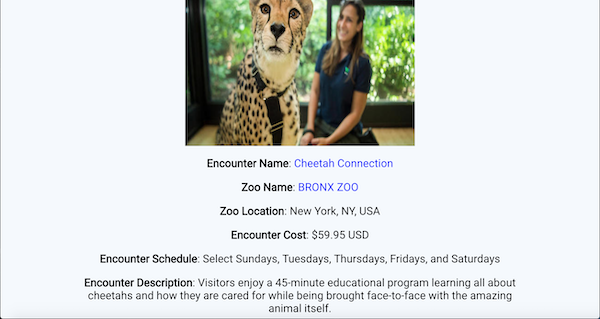
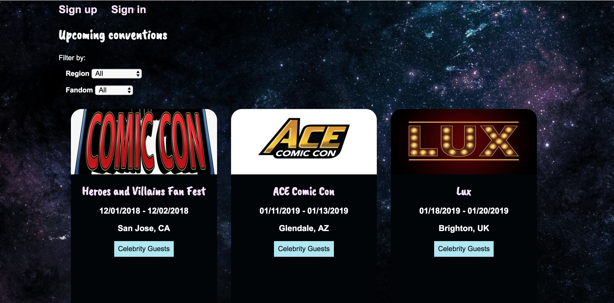
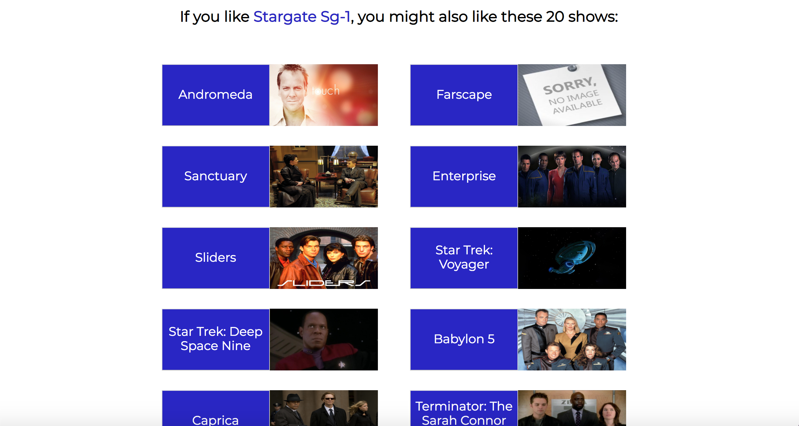

Featured Creatures

Featured Creatures helps users find behind-the-scenes, up-close-and-personal encounters with their favorite animals at zoos around the world. The app is built with React, Node, Express, MongoDB, HTML5, and CSS3. I always enjoy animal encounters when I visit a new zoo, so I was excited to use them as a subject for this project.
Github |
Live app
Con Life

Con Life is a crowd-sourced database for fan conventions across the United States and around the world built with JavaScript, jQuery, Node, Express, MongoDB, HTML5 and CSS3. This app was inspired by all of the fan conventions I've attended over the years.
Github |
Live app
Next Show

Next Show recommends TV shows based on your preferences and tells you where to watch them. I've already used it to find some new favorite shows. Built with JavaScript, jQuery, HTML5, and CSS3. Uses TasteDive and UTelly APIs.
Github |
Live app